.png)
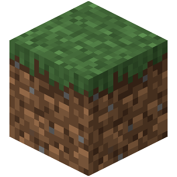
A grass block is a natural block that generates abundantly across the surface of the Overworld.
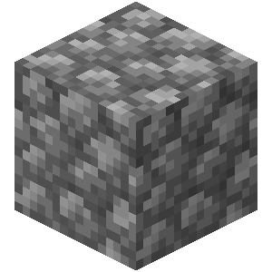
Cobblestone is a common block obtained from mining stone. It is mainly used for crafting or as a building block.
_JE8_BE3.png)
A log or stem is a naturally occurring block found in trees or huge fungi, primarily used as a building block and to create planks, a versatile crafting ingredient. There are nine types of logs: oak, spruce, birch, jungle, acacia, dark oak, mangrove, cherry blossom, and pale oak; and two types of stems: crimson, and warped.
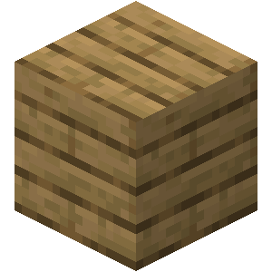
Planks are common blocks used as building blocks and in crafting recipes. They are usually one of the first things that a player crafts in Survival mode. There are currently twelve variants of planks, which can be differentiated into three categories: Overworld planks made from tree logs, bamboo planks made from blocks of bamboo, and nonflammable Nether planks made from huge fungus stems.

sand is a naturally occurring block that can be found in the Overworld. It is used to create glass.
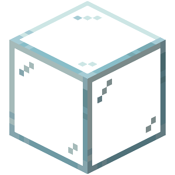
Glass is a transparent block that can be found in the Overworld. It is used to create windows and glass panes.
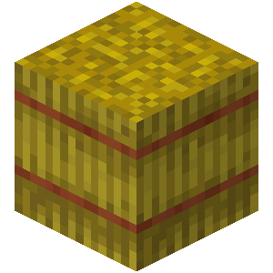
hay bale is a block that can be found in the Overworld. It is used to stack wheat.
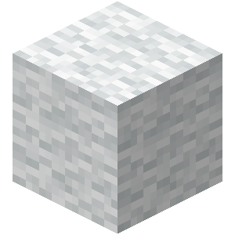
wool is a block that can be collected from sheep. It is used to create carpets and beds.
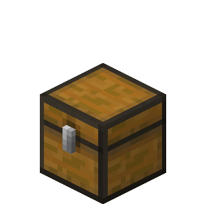
A chest is a block that can be placed in the Overworld, Nether, and End. It can hold up to 27 items and is used to store items. It can be placed in a double chest to store up to 54 items.

A crafting table is a utility block that gives access to all crafting recipes, including many not available from the inventory's crafting grid.

Bedrock is an indestructible block found in all three dimensions.
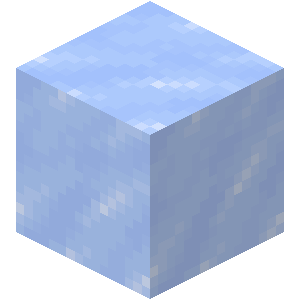
Ice is a transparent block formed from frozen water, which it can melt into if broken or exposed to bright light. Its top face is slippery for most entities and causes ridden boats to move at high speeds.
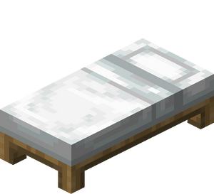
A bed is a dyeable utility block that allows a player in the Overworld to sleep through the night and reset their spawn point to within a few blocks of the bed, as long as it is not broken or obstructed.

TNT is a block that explodes when it is hit by a player or a mob, or when it is placed in a dispenser. It can be used to destroy blocks, create explosions, and damage mobs and players.
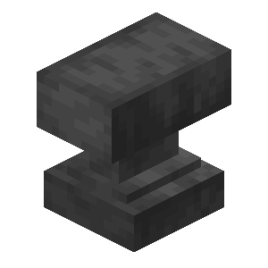
An anvil is a block that can be used to repair and combine items. like tools, weapons, and armor, and to combine items into new items.
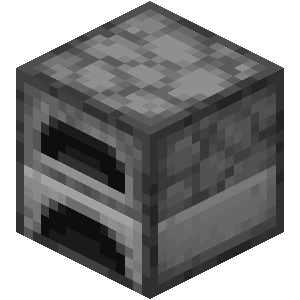
A furnace is a block that can be used to smelt and craft items.

Lava is a liquid block that can flow and create lava lakes and lava rivers.
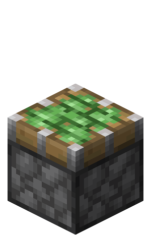
A sticky piston is a block that can push and pull blocks, it sticks to the blocks it pushes and pulls.
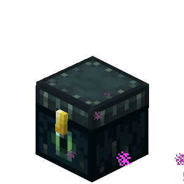
An ender chest is a type of chest whose contents are exclusive to each player, and they can be placed and accessed from anywhere in any dimension.
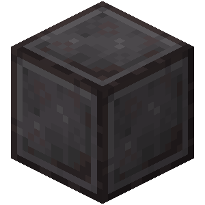
A block of netherite, internally known as a netherite block, is a precious metal block made from nine netherite ingots. Unlike most items, it is resistant to fire and lava, but can still be destroyed by cacti.

A block of diamond, known internally as a diamond block, is a precious mineral block equivalent to nine diamonds.
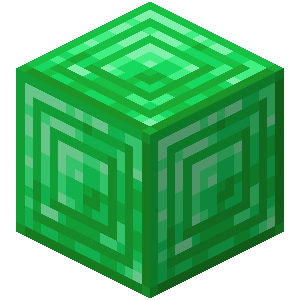
A block of emerald, internally known as an emerald block, is a mineral block equivalent to nine emeralds.
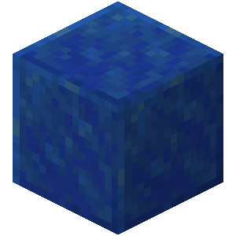
A block of lapis lazuli, internally known as a lapis block, is a mineral block equivalent to nine pieces of lapis lazuli.

A block of gold, internally known as a gold block, is a precious metal block equivalent to nine gold ingots.

A block of iron, known internally as an iron block, is a precious metal block equivalent to nine iron ingots.
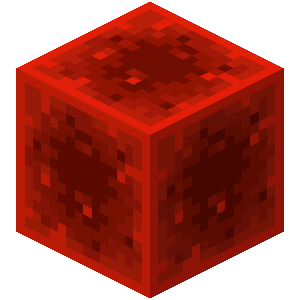
A block of redstone, internally known as a redstone block, is a mineral block equivalent to nine redstone dust. It acts as an always active redstone power source that can be moved by pistons.

A block of copper, internally known as a copper block, is a block that oxidizes over time, gaining a verdigris appearance over four stages. They can be prevented from oxidizing by being waxed with honeycombs. Non-oxidized blocks of copper are storage blocks equivalent to nine copper ingots.
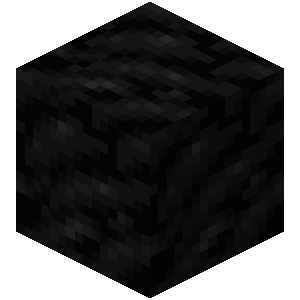
A block of coal, also known as a coal block, is a storage block, equivalent to nine coal, that can also be used as fuel.
_JE1_BE1.png)
A barrel is a solid block used to store items. Unlike a chest, it cannot connect to other barrels. It also serves as a fisherman's job site block.

A minecart is a ridable vehicle entity that runs on rails and can be used to transport both players and mobs.
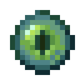
An eye of ender is a craftable item that can be thrown in the Overworld to show the direction of the nearest stronghold, which may break the eye. Up to 12 eyes of ender are required to activate a stronghold's End portal, which leads to the End dimension.
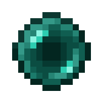
An ender pearl is an item that can be thrown to teleport to where it lands, or used to craft eyes of ender, which are required to access the End.
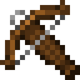
A crossbow is a ranged weapon that can load and fire arrows, arrow variants and firework rockets. Holding use will load it and it will remain loaded until it is fired, after which it can be loaded again.
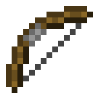
A bow is a ranged weapon that can fire arrows and tipped arrows. The damage and range of fired arrows depends on the arrow type, enchantments on the bow, and how long the use button was held before releasing.

A bottle o' enchanting is an item that can be thrown to break it and release experience orbs.
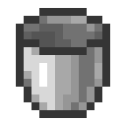
A bucket is a utility item used to carry water, lava, milk, powder snow, and various aquatic mobs.
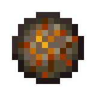
A fire charge is an item that can be used as a single-use version of a flint and steel or shot as a small fireball from a dispenser.

A firework rocket is an item that provides a speed boost when used while flying with elytra. It can also be launched as a projectile either by hand or from a crossbow or dispenser.
It can also be crafted using extra gunpowder to fly farther or with up to seven firework stars to add customizable damage-dealing explosions.
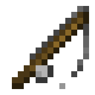
A fishing rod is a tool that casts a bobber used to fish in water or to hook and pull mobs, items[JE only], and some other entities towards the player.
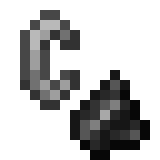
Flint and steel is a tool used to create fire or to ignite certain blocks, structures and mobs.
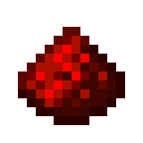
Redstone dust is a mineral used in crafting, brewing, trimming, and as a placeable wire.
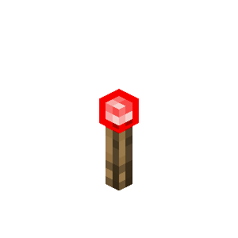
A redstone torch is a non-solid block that produces a full-strength redstone signal on all sides adjacent to it, except for its attached block, and can power the block directly above it. It deactivates while the block it is attached to is powered.
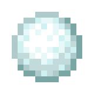
A snowball is an item obtained by breaking snow blocks or snow layers using a shovel. It can be crafted into snow blocks, thrown to knock mobs back, fed to ghastlings and used to attract happy ghasts.
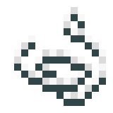
String is an item that can be used as a crafting material or placed as tripwire to allow tripwire hooks and observers to detect entities that touch it.
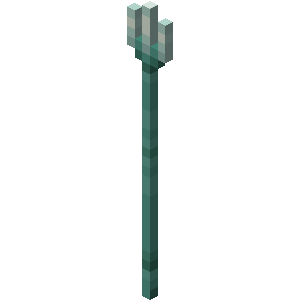
A trident is a weapon that can be used to perform melee attacks, or be thrown as a projectile that is not slowed down by water. It can rarely be obtained either from trident-wielding drowned or from trial chambers.

link to official Minecraft Site
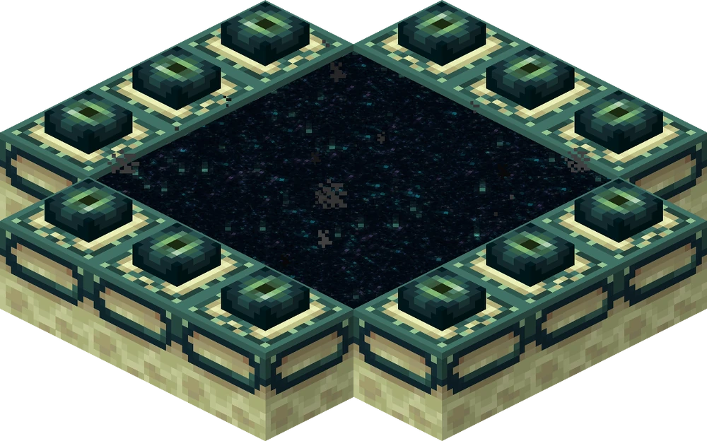
link to the Minecraft Wiki Site